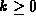

Data Structures and Algorithms
with Object-Oriented Design Patterns in Java
Data Structures and Algorithms
with Object-Oriented Design Patterns in Java
The preceding chapter introduces the idea of a perfect tree
(see Definition  ).
Complete trees and perfect trees are closely related,
yet quite distinct.
As pointed out in the preceding chapter,
a perfect binary tree of height h
has exactly
).
Complete trees and perfect trees are closely related,
yet quite distinct.
As pointed out in the preceding chapter,
a perfect binary tree of height h
has exactly  internal nodes.
Since, the only permissible values of n are
internal nodes.
Since, the only permissible values of n are
there is no perfect binary tree which contains, say 2, 4, 5, or 6 nodes.
However, we want a data structure that can hold an arbitrary number of objects so we cannot use a perfect binary tree. Instead, we use a complete binary tree, which is defined as follows:
Definition (Complete Binary Tree) A complete binary tree of height, is a binary tree with the following properties.
- If h=0, and .
- For h>0 there are two possibilities:
is a perfect binary tree of height h-1 and
is a complete binary tree of height h-1; or
Figure shows an example
of a complete binary tree of height four.
Notice that the left subtree of node 1 is a complete
binary tree of height three;
and the right subtree is a perfect binary tree of height two.
This corresponds to case 2 (b) of Definition .
Similarly, the left subtree of node 2 is a perfect binary tree of height two;
and the right subtree is a complete binary tree of height two.
This corresponds to case 2 (a) of Definition .
Figure: A complete binary tree.
Does there exist an complete binary with exactly n nodes for every integer n>0? The following theorem addresses this question indirectly by defining the relationship between the height of a complete tree and the number of nodes it contains.
Theorem A complete binary tree of heightand at most
nodes.
extbfProof First, we prove the lower bound by induction. Let be the minimum number of nodes in a complete binary tree of height h. To prove the lower bound we must show that .
Base Case There is exactly one node in a tree of height zero. Therefore, .
Inductive Hypothesis Assume that for , for some . Consider the complete binary tree of height k+1 which has the smallest number of nodes. Its left subtree is a complete tree of height k having the smallest number of nodes and its right subtree is a perfect tree of height k-1.
From the inductive hypothesis,
there are  nodes in the left subtree
and there are exactly nodes in the perfect right subtree.
Thus,
nodes in the left subtree
and there are exactly nodes in the perfect right subtree.
Thus,
Therefore, by induction for all  ,
which proves the lower bound.
,
which proves the lower bound.
Next, we prove the upper bound by induction. Let be the maximum number of nodes in a complete binary tree of height h. To prove the upper bound we must show that .
Base Case There is exactly one node in a tree of height zero. Therefore, .
Inductive Hypothesis Assume that for , for some . Consider the complete binary tree of height k+1 which has the largest number of nodes. Its left subtree is a perfect tree of height k and its right subtree is a complete tree of height k having the largest number of nodes.
There are exactly nodes in the perfect left subtree. From the inductive hypothesis, there are nodes in the right subtree. Thus,
Therefore, by induction for all  ,
which proves the upper bound.
,
which proves the upper bound.
It follows from Theorem
that there exists exactly one complete binary tree
that contains exactly n internal nodes
for every integer  .
It also follows from Theorem
that the height of a complete binary tree containing n internal nodes
is .
.
It also follows from Theorem
that the height of a complete binary tree containing n internal nodes
is .
Why are we interested in complete trees? As it turns out, complete trees have some useful characteristics. For example, in the preceding chapter we saw that the internal path length of a tree, i.e., the sum of the depths of all the internal nodes, determines the average time for various operations. A complete binary tree has the nice property that it has the smallest possible internal path length:
Theorem The internal path length of a binary tree with n nodes is at least as big as the internal path length of a complete binary tree with n nodes.
extbfProof Consider a binary tree with n nodes that has the smallest possible internal path length. Clearly, there can only be one node at depth zero--the root. Similarly, at most two nodes can be at depth one; at most four nodes can be at depth two; and so on. Therefore, the internal path length of a tree with n nodes is always at least as large as the sum of the first n terms in the series
But this summation is precisely the internal path length of a complete binary tree!
Since the depth of the average node in a tree is obtained by
dividing the internal path length of the tree by n,
Theorem tells us that complete trees are the best
possible in the sense that the average depth of a node in a complete
tree is the smallest possible.
But how small is small?
That is, is does the average depth grow logarithmically with n.
The following theorem addresses this question:
Theorem The internal path length of a complete binary tree with n nodes is
extbfProof
The proof of Theorem
is left as an exercise for the reader (Exercise ).
From Theorem we may conclude that
the internal path length of a complete tree is  .
Consequently, the depth of the average node in a complete tree is
.
Consequently, the depth of the average node in a complete tree is  .
.
 Copyright © 1998 by Bruno R. Preiss, P.Eng. All rights reserved.
Copyright © 1998 by Bruno R. Preiss, P.Eng. All rights reserved.